Visual development
Perception — design gallery
Appendix to the case study — every caption should answer what you are seeing and why it exists in the pipeline. This is not a digital comic reader — no lettered pages.
Production case study · Overview · Full archive mirror (all resource images)
Volume fronts
Intent: show programme vs exploratory work side by side so Part Two is not mistaken for active tooling.


Art direction
Intent: lock palette and line before scene passes and cast batch work — boards precede Modes strips.

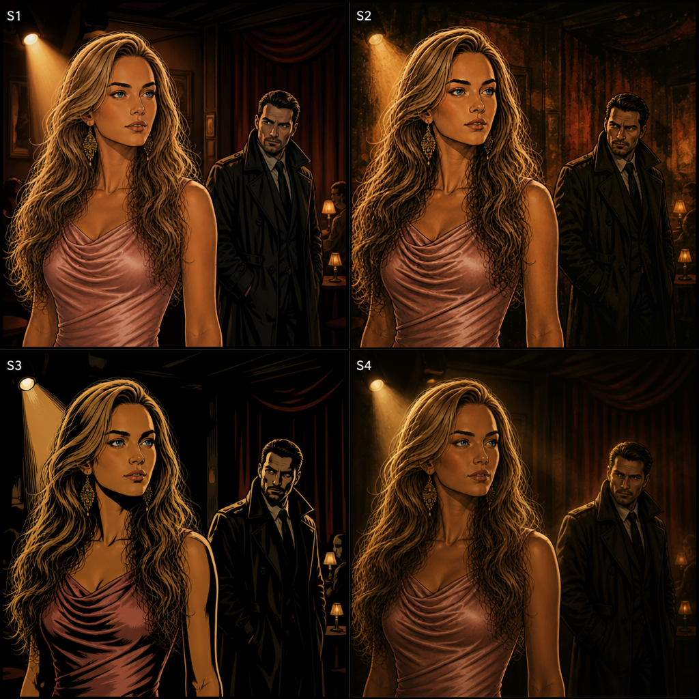
Scene samples (style pass)
Intent: prove environment + figure read at page scale — substitutes for lettered sequential until Book stage opens.

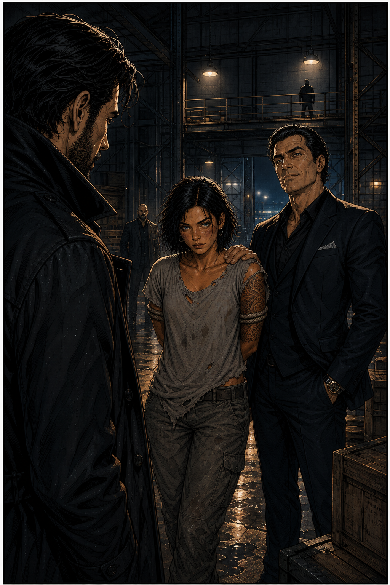
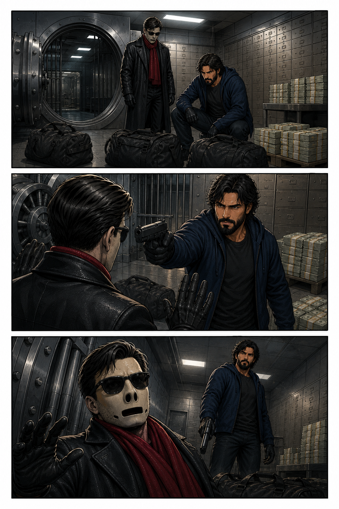

Pipeline templates
Intent: templates are gates — layout must match before strips count as pipeline output.


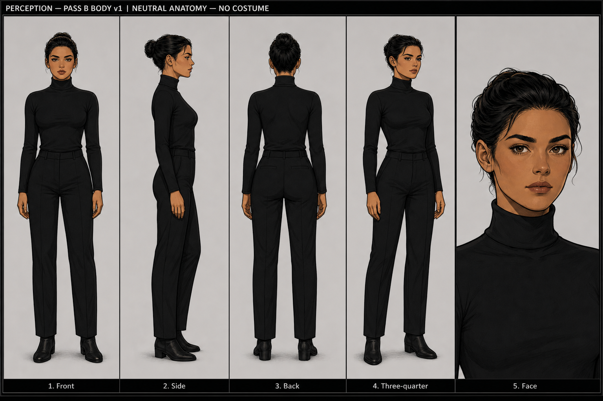
Cast — Modes strips
Intent: compare cast at a glance — v6 Modes output only; not an approved final cast list.

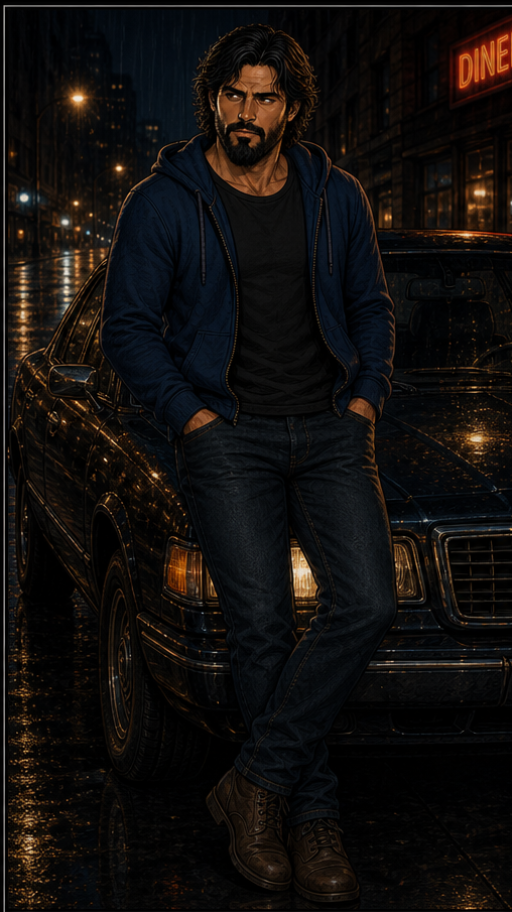
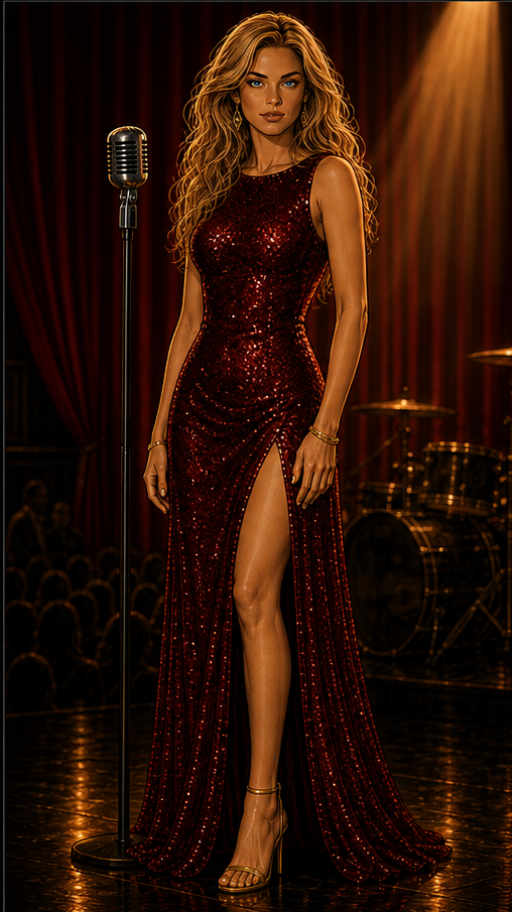


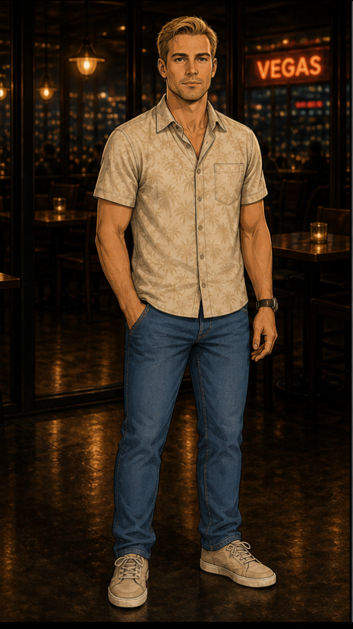
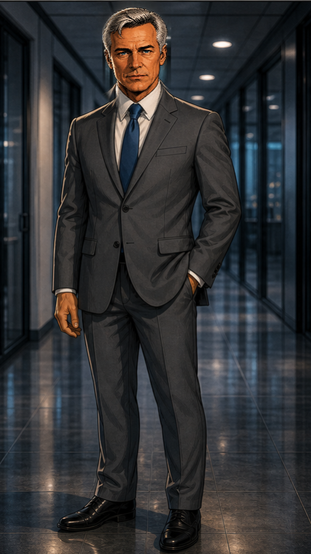
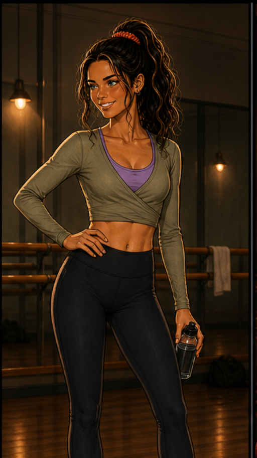
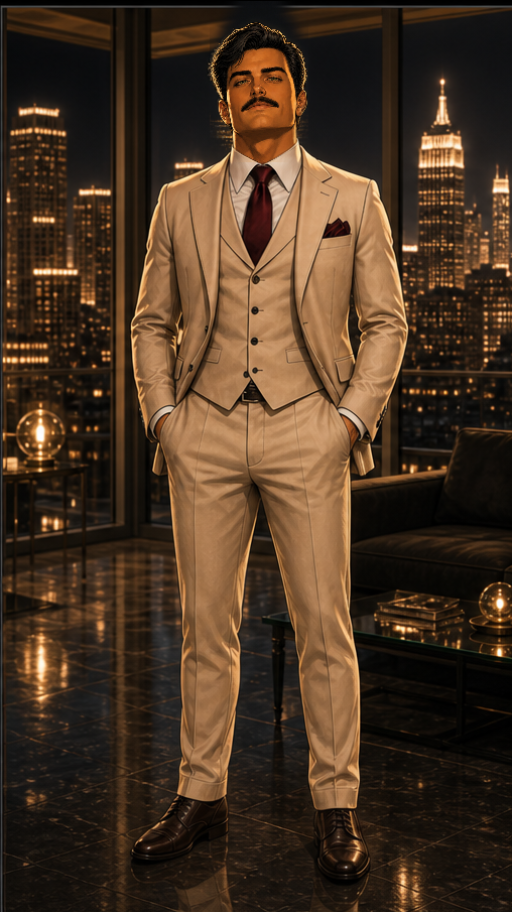

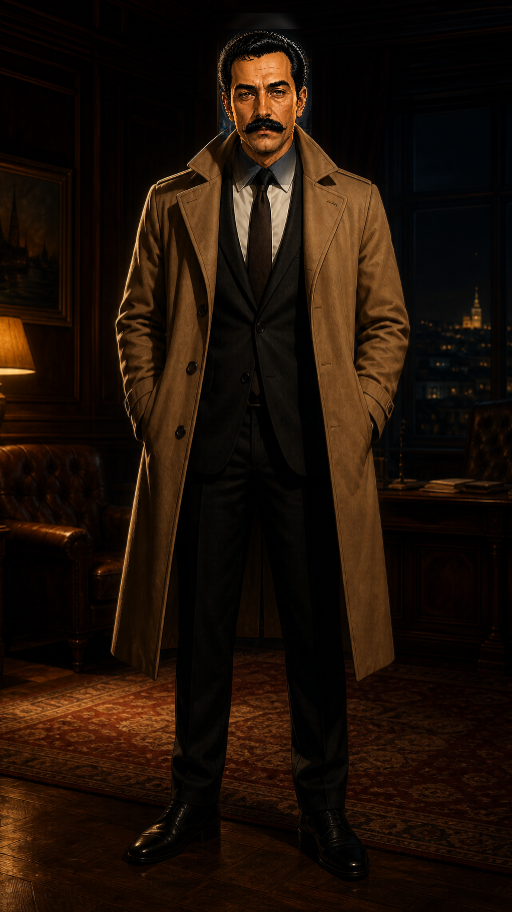

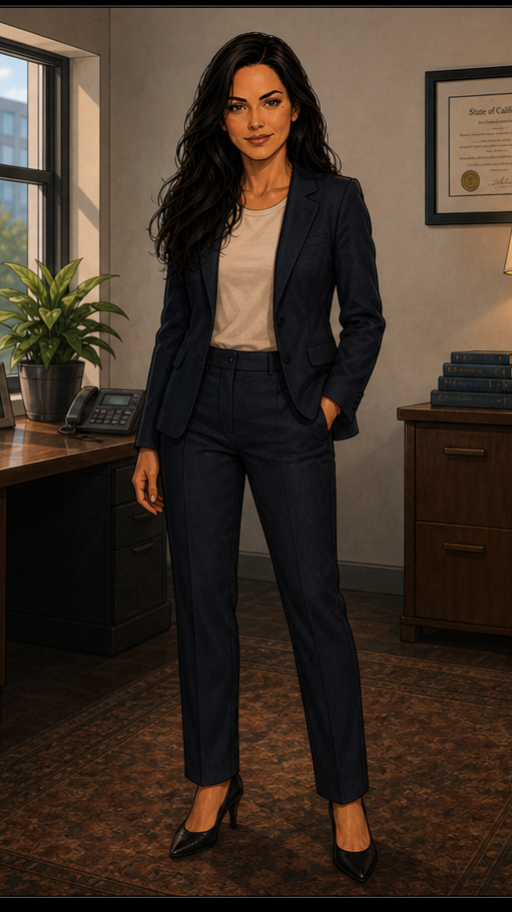